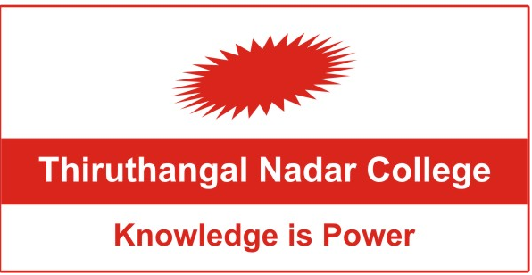

<header >
     <div class="top-bar">
         <div class="contact-info">
             <a href="mailto:principal@tncollege.ac.in">principal@tncollege.ac.in</a> | 
             <a href="tel:+919342465500">+91-93424 65500</a>
                     </div>
         <div class="links">
             <i class="fa-solid fa-user" style="margin:3px"></i> <a href="#">Faculty</a>
             <i class="fa-solid fa-book-open-reader" style="margin:3px"></i><a href="#">Libary</a>
             <i class="fa-solid fa-graduation-cap" style="margin: 3px;"></i><a href="#">Placement</a>
             <i class="fa-solid fa-s" style="margin:3px;"></i> <a href="#">swayam</a>
             <a href="#" aria-label="Admission page" class="admission-btn"><i class="fa-solid fa-building-columns" style="margin:3px"></i>Admission</a>

         </div>
     </div>
<!--  ---------------------------------------------------------------------------------------------- -->

     <!-- Logo and Title Section -->
     <div class="logo-section">
         
         <div class="college-info">
            <center><h1 style="font-size: 35px; font-weight: bold;">Thiruthangal Nadar College</h1>
             <p>Affiliated to the University of Madras & Reaccredited 'B++' Grade By NAAC</p>
             <center><p>Selavayal, Chennai-600051</p></center>
         </center> 
         </div>
     </div>
<!--  ---------------------------------------------------------------------------------------------- -->

    <!-- Navigation Bar -->
     <div class="div">
<nav class="navbar" style='width: 100%;'>
 <div class="hamburger" onclick="toggleMenu()">
     <div></div>
     <div></div>
     <div></div>
 </div>
 <ul>

     <li><a href="index.php" class="home-link" style="text-decoration: underline;">Home</a></li>
     <li class="dropdown">
         <a href="about.php">About us</a>
         <ul class="dropdown-content">
             <li><a href="about.html">History</a></li>
             <li><a href="about.html">Institutional Development Plan</a></li>
             <li><a href="about.html">Committee of Management</a></li>
             <li><a href="about.html">Institution Policies</a></li>
             <li><a href="about.html">Organogram</a></li>
             <li><a href="about.html">Annual Reports</a></li>
             <li><a href="about.html">Accreditation</a></li>
         </ul>
     </li>
     <li class="dropdown">
         <a href="academics.php">Academics</a>
         <ul class="dropdown-content">
             <li><a href="/academics/Course_offered.html">Course Offered</a></li>
             <li><a href="/academics/Course_offered.html">E-content</a></li>
             <li><a href="/academics/academics-calender.html">Academic calender</a></li>
             <li><a href="/academics/academics-collabration.html">Academic Collabration</a></li>
             <li><a href="/academics/Course_offered.html">statutes</a></li>
             <li><a href="/academics/Course_offered.html">libary</a></li>
            </ul>
     </li>
     <li class="dropdown">
         <a href="admission.php">Admission</a>
         <ul class="dropdown-content">
             <li><a href="/iqac/abou">Programee offered</a></li>
             <li><a href="/iqac/aqar">Guidlines for admission</a></li>
             <li><a href="/iqac/best-practices">Online Application</a></li>
         </ul>
     </li>
     <li><a href="/research">Research</a></li>
     <li class="dropdown">
         <a href="campus.php">Campus Life</a>
         <ul class="dropdown-content">
             <li><a href="/iqac/about">Cultural activites</a></li>
             <li><a href="/iqac/best-practices">Student council</a></li>
             <li><a href="/iqac/feedback">Student support</a></li>
             <li><a href="/iqac/alumni">Club activities</a></li>
             <li><a href="/iqac/members">Infrastructure</a></li>
             <li><a href="/iqac/members">Extension Activity</a></li>
         </ul>
     </li>
     <li class="dropdown">
         <a href="iqac.php">IQAC</a>
         <ul class="dropdown-content">
             <li><a href="iqac.html">About IQAC</a></li>
             <li><a href="iqac.html">AQAR</a></li>
             <li><a href="iqac.html">Best Practices</a></li>
             <li><a href="iqac.html">Feedback</a></li>
             <li><a href="iqac.html">Alumni</a></li>
             <li><a href="iqac.html">Gallery</a></li>
             <li><a href="iqac.html">Institutional Distinctiveness</a></li>
             <li><a href="iqac.html">IQAC Committee Members</a></li>
             <li><a href="iqac.html">IQAC Minutes And ATR</a></li>
             <li><a href="iqac.html">Quality Initiatives</a></li>
             <li><a href="iqac.html">SSR Cycle II Report</a></li>
             <li><a href="iqac.html>">NIRF</a></li>
             <li><a href="iqac.html">Templates</a></li>
             <li><a href="iqac.html">Internal Complaint Committee</a></li>
             <li><a href="iqac.html">MOU's</a></li>
         </ul>
     </li>
     <li class="dropdown">
         <a href="nacc.php">Student Life</a>
         <ul class="dropdown-content">
             <li><a href="/iqac/about">Nacc SSR Third cycle</a></li>
             <li><a href="/iqac/aqar">IIQA</a></li>
             <li><a href="/iqac/best-practices">Nacc Peer Team</a></li>
             <li><a href="/iqac/feedback">Feedback</a></li>
         </ul>
     </li>
     <li><a href="Gallery.php">Gallery</a></li>
     <li><a href="">Contact Us</a></li>
 </ul>
</nav>
 </header>